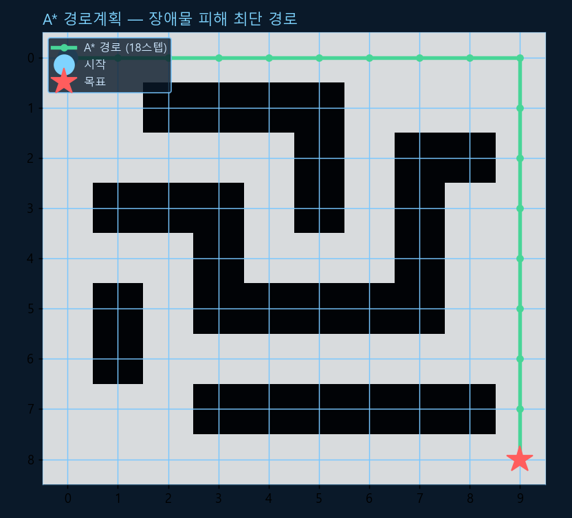
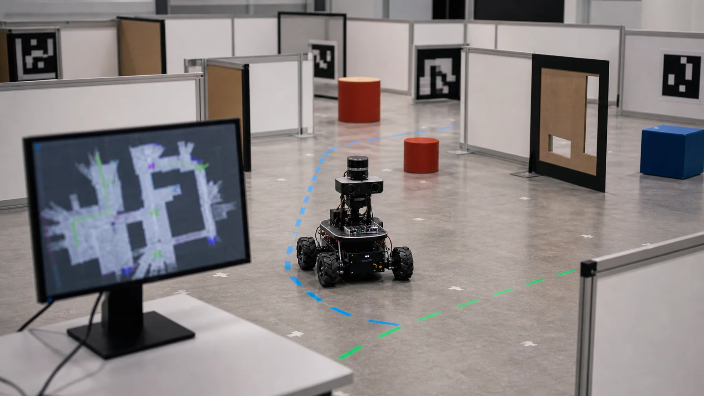

Chapter R9: 위치추정 · SLAM · 내비게이션
"내가 어디 있고(위치추정), 주변은 어떻게 생겼고(지도), 목표까지 어떻게 가지(경로계획)" — 자율 이동 로봇의 세 가지 핵심 질문입니다. R2의 센서·R4의 오도메트리·R8의 인식을 모두 합치는 종착지입니다. 칼만/파티클 필터, SLAM, 그리고 A* 경로계획을 다룹니다. (A* 경로계획과 1D 칼만 위치추정은 numpy로 실제 실행 검증했습니다.)

1. 자율주행의 세 가지 질문
방을 돌아다니는 청소 로봇을 떠올려 보세요. 스스로 움직이려면 끊임없이 세 가지를 풀어야 합니다.
📍 위치추정
"내가 지금 지도의 어디에 있나?" — 오도메트리(R4)+센서(R2)를 필터로 융합.
🗺️ 지도작성
"주변이 어떻게 생겼나?" — LiDAR·카메라로 점유 격자 지도 만들기.
🧭 경로계획
"목표까지 어떻게 가나?" — 장애물을 피하는 최적 경로 찾기.
위치추정과 지도작성을 동시에 푸는 것이 SLAM이고, 경로를 찾아 따라가는 것이 내비게이션입니다.
2. 위치추정 — 필터로 오차를 다스리기
오도메트리(R4)만으로는 바퀴 미끄러짐 때문에 오차가 누적됩니다(R2 드리프트). 그래서 오도메트리의 예측과 센서의 측정을 필터로 융합해 더 정확한 위치를 추정합니다. R2의 칼만 필터에 이동(예측) 단계를 더한 형태입니다.
💡 비유로 이해하기: 칼만(촛불) vs 파티클(반딧불 떼)
칼만 필터는 위치 가설이 하나의 봉우리(가우시안) — 촛불 하나로 "여기쯤"이라 보는 식이라 선형·단봉 상황에 최적입니다. 파티클 필터(몬테카를로 위치추정)는 수백~수천 개의 반딧불(파티클)로 "여기일 수도, 저기일 수도" 하는 여러 봉우리·비선형 분포를 표현합니다 — 처음에 어디 있는지 전혀 모를 때나 복잡한 지도에서 강합니다.

import numpy as np
def localize(meas, motions, R, Q, x0=0.0, P0=1.0):
x, P = x0, P0
out = []
for z, u in zip(meas, motions):
x = x + u; P = P + Q # ① 예측: 오도메트리(R4)로 u만큼 이동
K = P / (P + R) # ② 갱신: 센서 측정과 가중평균 (R2 칼만)
x = x + K * (z - x); P = (1 - K) * P
out.append(x)
return out
rng = np.random.default_rng(7)
true = np.cumsum(np.ones(10)) # 실제 위치 1,2,...,10
motions = np.ones(10) # 오도메트리: 매번 +1
meas = true + rng.normal(0, 0.5, 10) # 센서 측정(노이즈)
est = localize(meas, motions, R=0.25, Q=0.04)
print(f"실제 {true[-1]} / 측정(노이즈) {meas[-1]:.2f} / 칼만 추정 {est[-1]:.3f}")✅ 실행 결과 (검증됨)
실제 10.0 / 측정(노이즈) 9.69 / 칼만 추정 9.888
칼만 추정(9.888)이 노이즈 섞인 단일 측정(9.69)보다 실제값(10.0)에 더 가깝습니다 — 예측과 측정을 똑똑하게 합친 덕분입니다.
3. SLAM — 닭이 먼저냐 달걀이 먼저냐
SLAM(동시적 위치추정·지도작성)은 로보틱스의 유명한 난제입니다. 위치를 알아야 지도를 정확히 그리고, 지도가 있어야 위치를 정확히 안다 — 둘이 서로 의존하는 닭-달걀 문제를 동시에 추정해 풉니다.
실무에서는 2D LiDAR SLAM(slam_toolbox, gmapping)이나 그래프 기반 SLAM(포즈 그래프 최적화)을 씁니다. 결과물은 보통 점유 격자 지도(occupancy grid) — 각 칸이 "비었다/막혔다/모른다"로 표시된 지도이고, 이게 다음 경로계획의 입력이 됩니다.
4. 경로계획 — A*로 길찾기
지도가 생겼으니 목표까지 길을 찾습니다. 격자/그래프에서 최단 경로를 찾는 대표 방법들입니다.
- Dijkstra: 시작점에서 모든 방향으로 균등하게 퍼지며 탐색 — 정확하지만 느림.
- A*: 각 칸의 비용
f = g + h(g=시작부터 온 실제 거리, h=목표까지 추정 거리=휴리스틱)로, 목표 쪽을 우선 탐색해 훨씬 빠릅니다. 휴리스틱이 실제 거리를 넘지 않으면(admissible) 최단 경로를 보장합니다. (h=0이면 Dijkstra와 같음.) - RRT / RRT*: 무작위로 트리를 뻗어 탐색 — 로봇팔처럼 차원이 높거나 연속인 공간에 적합(RRT*는 점점 최적해에 수렴).
import heapq
def heuristic(a, b):
return abs(a[0]-b[0]) + abs(a[1]-b[1]) # 맨해튼 거리 (h)
def astar(grid, start, goal): # grid: 0=빈칸, 1=장애물
H, W = grid.shape
open_set = [(0, start)] # 우선순위 큐 (f, 칸)
came_from = {}
g = {start: 0} # 시작~각 칸의 실제 비용
while open_set:
_, cur = heapq.heappop(open_set) # f가 가장 작은 칸 꺼내기
if cur == goal: # 도착 → 경로 복원
path = [cur]
while cur in came_from:
cur = came_from[cur]; path.append(cur)
return path[::-1]
for dr, dc in [(-1,0),(1,0),(0,-1),(0,1)]: # 상하좌우
nr, nc = cur[0]+dr, cur[1]+dc
if 0 <= nr < H and 0 <= nc < W and grid[nr, nc] == 0:
ng = g[cur] + 1
if (nr, nc) not in g or ng < g[(nr, nc)]:
g[(nr, nc)] = ng
f = ng + heuristic((nr, nc), goal) # f = g + h
heapq.heappush(open_set, (f, (nr, nc)))
came_from[(nr, nc)] = cur
return None
path = astar(grid, start, goal)
print("경로 길이:", len(path), "스텝 | 장애물 통과?", any(grid[r,c]==1 for r,c in path))✅ 실행 결과 (검증됨 — 위 그래프가 이 결과)
경로 길이: 18 스텝 | 장애물 통과? False
6. 한 장 요약
| 주제 | 한 줄 정리 | 핵심 |
|---|---|---|
| 위치추정 | 오도메트리(예측)+센서(측정) 융합 | 칼만(단봉)·파티클(다봉) |
| 칼만 vs 파티클 | 가우시안 선형 vs 임의·비선형 | MCL=파티클 위치추정 |
| SLAM | 위치추정+지도작성 동시 | 닭-달걀, 루프 클로저 |
| Dijkstra / A* | 균등 탐색 vs 휴리스틱 우선 | A*: f = g + h (admissible → 최적) |
| RRT | 무작위 트리, 고차원·연속 | RRT*는 점근 최적 |
| Nav2 | ROS 2 완성형 내비게이션 | 코스트맵·글로벌/로컬·복구 |
이제 로봇이 스스로 길을 찾아 이동합니다. 마지막 R10(매니퓰레이션 & 학습기반 제어)에서는 로봇팔로 물체를 집고(MoveIt), 강화학습으로 정책을 배우는 sim-to-real을 다룹니다(곧 공개). 💪